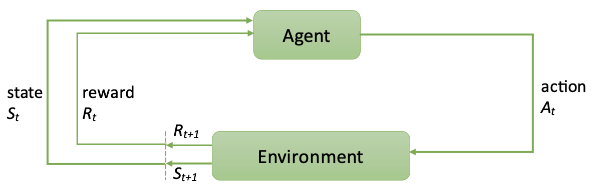

Lesson 3- Markov Decision Processes, Dynamics and Bellman Equaitons
Learning outcomes
- understand MDP and its elements
- understand the return for a time step \(t\)
- understand the expected return of a state \(s\)
- understand the Bellman optimality equations
- become familiar with the different types of grid world problems

Markov Decision Process (MDP)
A Markov Decision Process (MDP) provides a mathematical framework to model decision-making problems where an agent interacts with an environment. It is characterised by a tuple \( (\mathcal{S}, \mathcal{A} , \mathcal{R}, p, \gamma) \) where:
- \( \mathcal{S} \) is the set of states.
- \( \mathcal{A} \) is the set of actions.
- \( \mathcal{R} \) is the set of rewards.
-
p is the dynamics of the MDP \( p(s', r | s, a) = \Pr\{ S_{t+1} = s', R_{t+1} = r | S_t = s, A_t = a \} \) constitutes the probability of transitioning to state \( s' \) and receiving reward \( r \), given that the agent is in state \( s \) and takes action \( a \). Where:
- \( S_t \) is the state at time step \( t \),
- \( A_t \) is the action taken at time step \( t \),
- \( S_{t+1} \) is the next state after taking action \( A_t \) from \( S_t \).
- \( R_{t+1} \) is the next reward after taking action \( A_t \) from \( S_t \).
-
\( \gamma \in [0,1] \) is the discount factor, which determines how much future rewards are valued relative to immediate rewards.
- If \( \gamma = 0 \), the agent considers only immediate rewards.
- If \( \gamma \approx 1 \), the agent values long-term rewards more.
The MDP framework is central to reinforcement learning, as it allows the agent to plan and optimize its actions over time to maximize the expected return.
The dynamics of the MDP is a probability distribution and satisfies that
There are two types of dynamics that are actually related to each other:
-
Stochastic Dynamics: \( p(s', r | s, a) \) defines a probability distribution over possible next states and rewards, this accomodate for a stochastic dynamics. This means the transition probability \( p(s' | s, a) \) is non-deterministic, so we do not know for sure which state s' the agent will end up with. Similarly, the reward can vary for the same transition.
-
Deterministic Dynamics: If the dynamics \( p(s', r | s, a) \) assigns probability 1 to a single next state \( s' \) and reward \( r \), meaning the next state and reward are fully determined by \( s \) and \( a \), the dynamics is deterministic. This implies that \( p(s' | s, a) \) always results in the same \( s' \).
Note that a deterministic dynamics is a special case of stochastic dynamics. Also note that in a finite MDP, the sets of states, actions, and rewards \((\mathcal{S, A}\), and \(\mathcal{R})\) all have a finite number of elements.
Transition and Reward
The transition describe how the environment behaves when the agent takes an action in a given state. The transition function \( p(s' | s, a) \) specifies the probability of transitioning from state \( s \) to state \( s' \) when the agent takes action \( a \).
Formally, the transition function is expressed as:
- Markov Property: The environment satisfies the Markov Property, means that the next state depends only on the current state and action, not on the history of previous states or actions.
Example: In a grid world, if the agent is at state \( s = (2, 2) \) and takes action \( a = \text{move left} \), the transition probability might be deterministic:
This means that the agent always moves from \( (2, 2) \) to \( (1, 2) \) when taking the action "move left".
The propability \( p(s' | s, a) \) is called the transition function, representing the probability of transitioning from state \( s \) to state \( s' \) after taking action \( a \). Since the dynamics \( p(s', r | s, a) \) gives the joint probability of the next state and reward, we can obtain the transition probability by summing over all possible rewards (called marginalising the reward):
[ p(s' | s, a) = \sum_r p(s', r | s, a) ]
This expresses the probability of transitioning to state \( s' \) given \( s \) and \( a \), regardless of the reward received.
The Markov Property asserts that the future state depends only on the current state and action, not on any previous states or actions. This is a core assumption in MDPs and ensures that the system has no memory of past actions or states.
Formally:
In many MDPs, the transition and reward functions are stationary, meaning that they do not change over time. This ensures that the transition probabilities and rewards are the same at every time step.
Formally:
The Policy and its Stationarity
A policy in reinforcement learning is a strategy or function that defines the agent's actions at each state in an environment. Mathematically, a policy is often represented as \( \pi(a|s) \), where \( s \) is a state and \( a \) is an action. The policy \( \pi(a|s) \) gives the probability of taking action \( a \) when in state \( s \).
A stationary policy is one where the action probabilities depend only on the current state and remain constant over time. Formally, a stationary policy satisfies:
This means the policy does not change as the environment evolves. This is common in many reinforcement learning settings where the dynamics of the problem do not change over time.
In contrast, a non-stationary policy is one where the action probabilities can change with time:
This occurs when the policy is adapted or modified based on external factors, such as learning or changes in the environment. A non-stationary policy is useful in situations where the environment or the agent's understanding of it evolves over time.
The Expected Reward
The expected reward define the expected reward that the agent receives when it takes an action in a given state and transitions to a new state. The expected reward function \( r(s, a, s') \) specifies the reward the agent is expected to recieve when transitioning from state \( s \) to state \( s' \) after taking action \( a \).
Formally, the reward function is expressed as:
Example: If the agent takes action \( a = \text{move right} \) from state \( s = (1, 1) \), the reward function might be: \(r((1, 1), \text{move right}, (2, 1)) = 10\). Indicating that moving to the goal state \( (2, 1) \) yields a reward of 10. Conversely, if the agent moves to a dangerous state: \(r((1, 1), \text{move left}, (0, 1)) = -5\). The agent receives a penalty of -5.
The expected reward function \( r(s, a, s') \) can be derived from the joint transition-reward probability \( p(s', r | s, a) \) as follows:
This formula represents the expected reward received when transitioning to state \( s' \) from state \( s \) after taking action \( a \), by summing over all possible rewards weighted by their probabilities.
which represents the average reward expected when taking action \( a \) in state \( s \), considering all possible next states weighted by their transition probabilities.
From the above can you work out hwo to calculate \( r(s, a) \) from \( p(s', r | s, a) \).
The expected reward function \( r(s, a) \) can be computed from the joint transition-reward probability \( p(s', r | s, a) \) as follows:
This formula represents the expected reward for taking action \( a \) in state \( s \), by summing over all possible next states \( s' \) and rewards \( r \), weighted by their probabilities.
The Return \(G_t\)
The return of time step \(t\) is defiend as the sum of actual rewards the agent recieves form current time step up until the end of the horizon (end of agent episode or infinitely).
Accordingly at time step \(t+1\) we have:
Hence by multiplying \(G_{t+1}\) by \(\gamma\) and adding R_{t+1} we get
The above equation is the most important equation in RL that the Bellman Equations are built on it. In turn, we build all of our incremental updates in RL on Bellman optimality equation
In the video below we talk more about this important concept.
Monotonicity of \(G_t\) in MDPs
The return \(G_t\) in an MDP follows the recursive formula: \( G_t = R_{t+1} + \gamma G_{t+1} \) where rewards at each step can be either positive or negative. To calculate \(G_t\) we will go backwards, i.e. we will need to calculate \(G_{t+1}\) to be able to calculate \(G_t\) due to the incremental form of \(G_t\) where we have that \(G_t = R_{t+1} + \gamma G_{t+1}\).
Monotonic Decrease of \(G_t\)
\(G_t\) is monotonically decreasing iff: \( G_t < \frac{R_t}{1 - \gamma} \quad \forall t, \quad \text{and } G_T = R_T > 0 \).
For example:
- If \( R_t = 1 \quad \forall t \quad\) and \( \gamma = 0.9 \), then \( G_t \) is bounded above by \(\frac{1}{1 - 0.9}=10 \).
- If \( R_t = 1 \quad \forall t \quad\) and \( \gamma = 0.99 \), then \( G_t \) is bounded above by ?.
- More generally, when \( 1 - \gamma = 1/\beta \), then \(G_t< \beta R_t \).
Exercise: calculate the bound when \( R_t = 1 \quad \forall t \quad\) and \( \gamma = 0.99 \).
Monotonic Increase of \(G_t\)
\(G_t\) is monotonically increasing iff: \( G_t > \frac{R_t}{1 - \gamma} \quad \forall t, \quad \text{and } G_T = R_T < 0 \).
- If \( R_t = -1 \quad \forall t \quad\) and \( \gamma = 0.9 \), then \( G_t \) is bounded below by -10.
- More generally, when \( 1 - \gamma = 1/\beta \), then \( G_t > \beta R_t \).
Proof for Monotonically Decreasing case (optional)
Assume \( G_t \) is strictly decreasing: \( 0< G_{t+1} < G_t \quad \forall t \).
Substituting \( G_t \) by R_{t+1} + \gamma G_{t+1} as per the recursive return formula:
\( G_{t+1} < R_{t+1} + \gamma G_{t+1} \)
\( G_{t+1} (1 - \gamma) < R_{t+1} \)
\( G_{t+1} < \frac{R_{t+1}}{1 - \gamma} \)
Thus, the condition is necessary and sufficient for monotonic decrease.
For example, if \( R_{t+1} = 1 \) and \( \gamma = 0.9 \): hence \( \frac{1}{1 - 0.9} > G_{t+1} \implies 10 > G_{t+1} \).
The proof for the increasing case is similar.
Monotonicity of \(G_t\) in Sparse MDP Rewards
For sparse end-of-episode rewards, where \( R_t = 0 \;\; \forall t < T \) and \( R_T > 0 \):
-
\( G_t \) is monotonically increasing: \( G_t \leq G_{t+1}, \quad \forall t < T. \)
-
If \( \gamma < 1 \), then \( G_t \) is strictly increasing: \( G_t < G_{t+1}. \)
-
\(G_t = \gamma^{T-t-1} R_T.\)
- If \( R_T = 1 \), then \( G_t = \gamma^{T-t-1} \).
- If \( R_T = -1 \), then \( G_t = -\gamma^{T-t-1} \).
Proof for Sparse Rewards (optional)
From the recursive definition:
\(
G_t = R_{t+1} + \gamma G_{t+1}
\). Since \( R_{t+1} = 0 \) for \( t < T \):
\(
G_t = \gamma G_{t+1} \quad \forall t < T
\).
Since \( \gamma \leq 1 \), then \( G_t \leq G_{t+1} \).
Using the full return formula:
\(
G_t = R_{t+1} + \gamma R_{t+2} + \gamma^2 R_{t+3} + \dots + \gamma^{T-t-1} R_T
\).
Since \( R_{t+1} = 0 \;\; \forall t < T \) then \(G_t = \gamma^{T-t-1} R_T.\)
Implications for RL Agents
This gives us guidance on the type of behaviour that we expect our agent to develop when we follow one of these reward regimes (sparse or non-sparse).
The above suggests that for sparse end-of-episode rewards, decisions near the terminal state(s) have far more important effects on the learning process than earlier decisions. While for non-sparse positive rewards MDPs, earlier states have higher returns and hence more importance than near terminal states.
If we want our agent to place more importance on earlier states, and near-starting state decisions, then we will need to utilise non-sparse (positive or negative) rewards. Positive rewards encourage repeating certain actions that maintain the stream of positive rewards for the agent. An example will be the pole balancing problem. Negative rewards, encourage the agent to speed up towards ending the episode so that it can minimise the number of negative rewards received.
When we want our agent to place more importance for the decisions near the terminal states, then a sparse reward is more convenient. Sparse rewards are also more suitable for offline learning as they simplify the learning and analysis of the agent's behaviour. Non-sparse rewards suit online learning on the other hand, because they give a quick indication of the agent behaviour suitability and hence speed up the early population of the value function.
In summary:
- Sparse rewards emphasise decisions near terminal states, making them better suited for offline learning.
- Non-sparse rewards emphasise earlier decisions, making them better for online learning and faster value estimation.
- Positive rewards encourage sustaining good behavior (e.g., pole balancing).
- Negative rewards encourage minimising episode duration (e.g., escape or navigation problems).
The Expected Return Function V
Once we move form an actul return that comes froma an actual experience at time step \(t\) to try to estimate this return, we move to an expectaiton function. This function, traditionally called the value function v, is an important function. But now isntead of tying the value of the return to a particular experience at a step t which would be less useful in generalising the lessons an agent can learn from interacting with the environment, it makes more sense to ty this up to a certain state \(s\). This will allow the agent to learn a useful expectation of the return(discounted sum of rewards) for a particualr state when the agent follows a policy \(\pi\). I.e. we are now saying that a we will get an expected value of the return for a particular state under a policy \(\pi\). So we moved from subscripting by a step \(t\) into passing a state \(s\) to the function and subscripting by a policy.
Equation \(\eqref{eq:v}\) gives the definition of v function.
In the following video we tackle this idea in more details.
For algorithms like Value Iteration, it is important that the MDP is irreducible (all states are reachable from any other state) and aperiodic (there are no cycles of fixed lengths that prevent convergence).
The Bellman Equations
The Bellman equations provide recursive relationships between the value of a state (or state-action pair) and the values of neighboring states. These equations are fundamental in solving MDPs and are the basis for many reinforcement learning algorithms.
The value function \( V_{\pi}(s) \) represents the expected return starting from state \( s \) and following policy \( \pi \). The Bellman equation for \( V_{\pi}(s) \) is:
Where: - \( V_{\pi}(s) \) is the value of state \( s \) under policy \( \pi \), - \( r(s, a, s') \) is the immediate reward for transitioning from \( s \) to \( s' \) after action \( a \), - \( \gamma \) is the discount factor, and - \( p(s' | s, a) \) is the transition probability.
The Q-function \( Q_{\pi}(s, a) \) represents the expected return after taking action \( a \) in state \( s \) and then following policy \( \pi \). The Bellman equation for \( Q_{\pi}(s, a) \) is:
Where: - \( Q_{\pi}(s, a) \) is the action-value function, - The terms \( r(s, a, s') \), \( \gamma \), and \( p(s' | s, a) \) are the same as in the value function equation.
Bellman Optimality Equations
The Bellman optimality equations describe the relationship between the optimal value function \( V^*(s) \) or the optimal Q-function \( Q^*(s, a) \) and the transition and reward dynamics. These equations are used to compute the optimal policy that maximizes the expected return.
Where: - \( V^*(s) \) is the optimal value function, - \( Q^*(s, a) \) is the optimal Q-function, - The max operator ensures that the agent chooses the action \( a \) that maximizes the expected return.
You can adjust the video settings in SharePoint (speed up to 1.2 and reduce the noise if necessary)
Exercise 1: If you realise there is a missing symbol in the [video: Bellman Equation for v] last equations, do you know what it is and where it has originally come from?
Exercise 2: Can you derive Bellman Optimality Equation for \(q(s,a)\) from first principles?
Bellman Optimality for q from first principles can be found in this optional video.
Grid World Environments
Ok, so now we are ready to tackle the practicals, please go ahead and download the worksheet and run and experiement with the provided code to build some grid world environments and visualise them and make a simple robot agent takes some steps/actions within these environments!.
You will need to download a python library (Grid.py) that we bespokley developed to help you run RL algorithms on toy problems and be abel to easily visualise them as needed, the code is optimised to run efficiently and you will be able to use these environmnets to test different RL algorithms extensively. Please place the library in the same directory of the worksheet. In general it would be a good idea to place all worksheets and libraries provided in one directory. This will make importing and runing code easier and more streamlined.
Summary
The Markov Decision Process (MDP) framework models decision-making problems where an agent interacts with an environment. It includes dynamics \( p(s', r | s, a) \), which define the probability of transitioning to state \( s' \) and receiving reward \( r \) given that the agent is in state \( s \) and takes action \( a \). The Bellman equations provide recursive relationships for computing the value of states or actions, while the Bellman optimality equations help find the optimal policy. Key properties of MDPs include the Markov Property, stationarity, and the stochastic nature of the dynamics. Understanding these dynamics and equations is fundamental to reinforcement learning algorithms designed to find optimal decision-making strategies.
Further Reading: For further info please refer to chapter 3 of the Sutton and Barto book.
Your turn
Go ahead and play around with some grid world environment by executing and experiementing with the code in worksheet3.